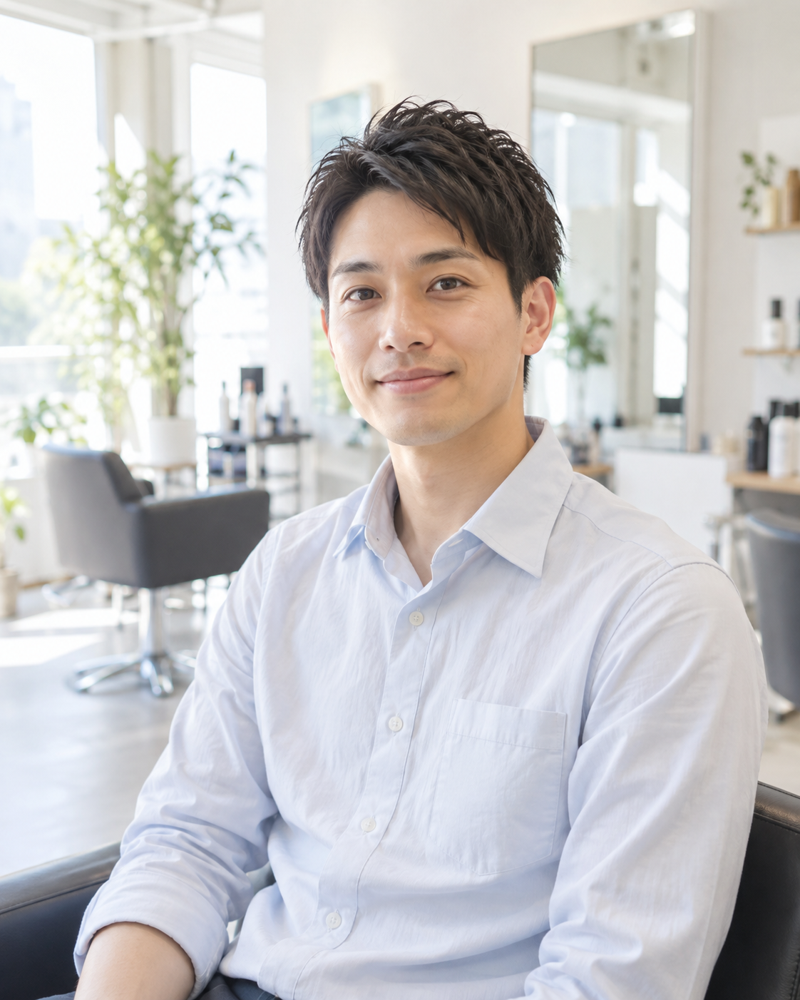
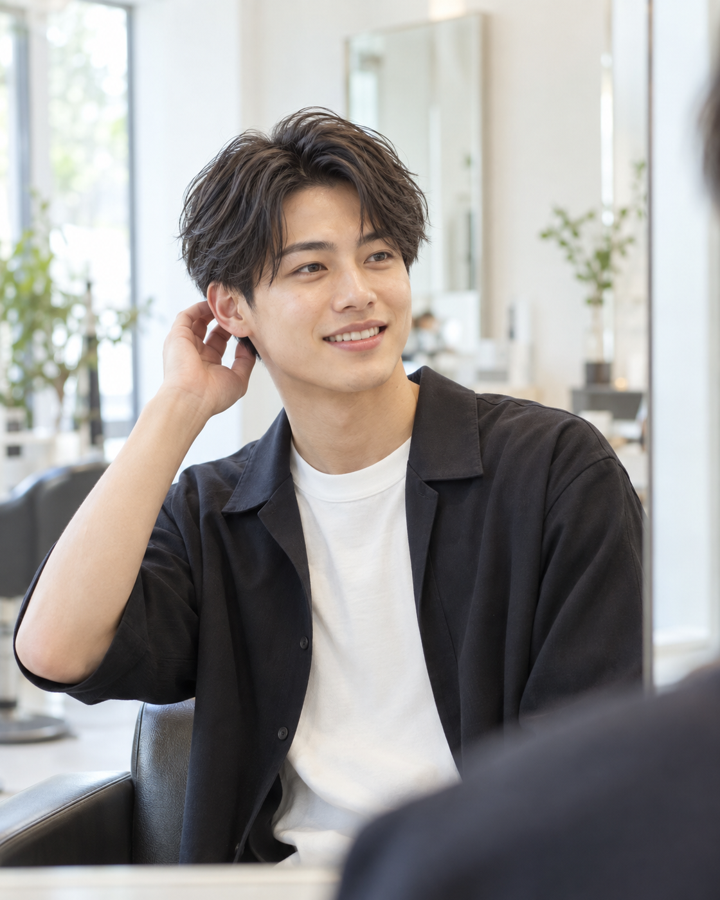
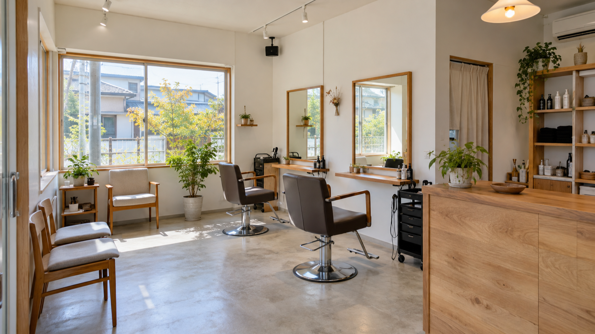

地域のみなさまへ、そして新しい世代の男性たちへ
HAIR SARON 02は、埼玉県比企郡鳩山町松ヶ丘のプチプラザE店舗で営業する、 地域密着の美容室です。白髪染めやパーマを中心に、地元の年配のお客様に長くご愛顧いただいてきました。
これからは、学生さんやお仕事帰りのサラリーマンの方など、若い男性のお客様にも、 もっと気軽に立ち寄っていただきたいと考えています。理容室感覚でふらっと入れる、 そんな入りやすさを大切にしています。
もちろん、これまで通っていただいているご年配のお客様も大切な存在です。 男女・年代を問わず、どなたでも安心してお任せいただけるサロンでありたいと思っています。


Discover Us
It's always nice to find something new about one another, like a small discovery inside.
学生さんからご年配の方まで、男女どなたでも大歓迎です。HAIR SARON 02のことを、もっと知ってください。
低刺激カラー剤を使用した白髪染めメニューについて、期間限定のご案内です。詳しくは店頭またはお電話にてお問い合わせください。
理容室感覚で気軽に立ち寄れる、若い男性のお客様にも人気のパーマスタイルをご紹介します。

現在の営業時間・定休日について、詳細をまとめました。ご来店前にぜひご確認ください。
| 店舗名 | HAIR SARON 02（ヘアーサロン ゼロツー） |
|---|---|
| TEL | 049-292-9695 |
| 営業時間 | 9:00〜19:00（詳細はディレクションで確定予定） |
| 定休日 | 不定休（確認中） |
| 駐車場 | あり（プチプラザ敷地内・完備） |
| ご予約 | お電話・お問い合わせフォームより（予約なしのご来店も歓迎） |
ご予約・ご相談は、お電話またはお問い合わせフォームからお気軽にどうぞ。
予約なしでもご来店OK ／ 駐車場完備（プチプラザ敷地内）